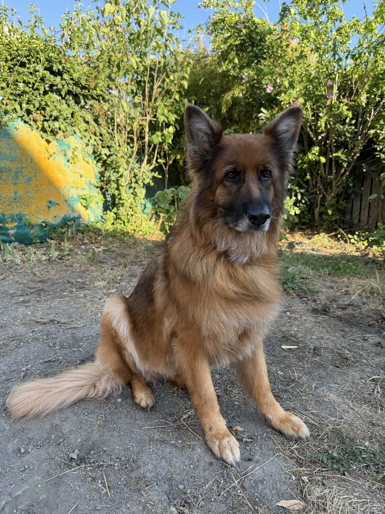
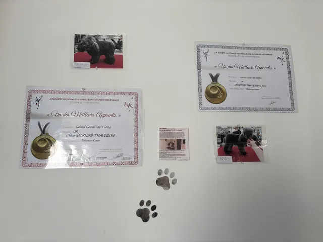
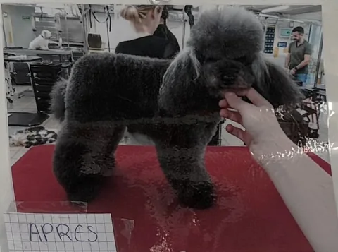
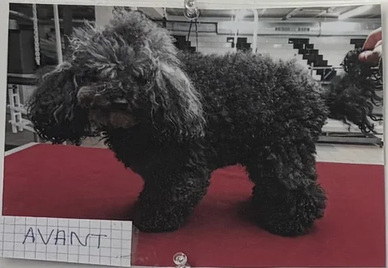
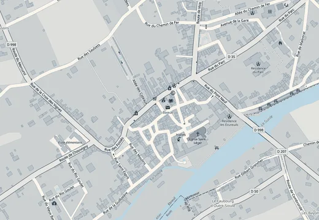

Salon de toilettage canin · Ébreuil, Allier
Allô P’tites Pattes , salon de toilettage pour chiens à Ébreuil (Allier)
Bain, brushing, coupe, démêlage… Au 6 place de la Mairie, Chloé, médaillée d’or au concours « Un des Meilleurs Apprentis de France », prend soin de votre compagnon avec douceur, quelle que soit sa race.
5,0 6 avis Google

La toiletteuse
Chloé, des ciseaux en or
Passionnée par les animaux depuis toute petite, Chloé Mosnier-Thaveron a appris le toilettage au lycée agricole des Combrailles, à Saint-Gervais-d’Auvergne, et chez son maître de stage à Mariol. Son savoir-faire ne passe pas inaperçu : en 2024, elle décroche deux médailles d’or au concours « Un des Meilleurs Apprentis de France », en toilettage canin, au niveau départemental puis régional.
Après de longues recherches, c’est à Ébreuil qu’elle a installé son salon, au 6 place de la Mairie. Petits ou grands, à poil court ou tout en boucles : tous les chiens y sont accueillis avec la même douceur.
- 2médailles d’or en 2024
- 5,0/5sur 6 avis Google
- Toutesles races sont les bienvenues
Les soins
Chaque pelage a sa routine
Dites-nous quel poil a votre chien : on vous montre, dans l’ordre, les soins qui lui font du bien.
Choisissez un pelage pour découvrir sa routine.
-
Bain & séchage
Shampoing adapté au pelage, rinçage soigneux, puis un séchage complet, jusqu’à la racine.
-
Brushing
Le coup de brosse et de séchoir qui retire le poil mort et rend au pelage volume et brillance.
-
Coupe
Aux ciseaux ou à la tondeuse, selon la race, la saison et vos envies.
-
Démêlage
Les nœuds sont défaits un à un, patiemment, sans tirer sur la peau.
-
Hygiène
Les zones délicates nettoyées et dégagées : contour des yeux, coussinets, dessous de la queue.
-
Coupe des griffes
Des griffes à la bonne longueur, pour des pattes confortables sur tous les sols.
-
Nettoyage des oreilles
En douceur, pour des oreilles propres et sans gêne, surtout chez les grandes oreilles tombantes.
-
Toilettage complet
La totale, de la truffe au bout de la queue : votre chien repart comme neuf.
Le tarif dépend de la race, de la taille, de l’état du pelage et des soins choisis. « Les tarifs sont très corrects », écrit un client sur Google : demandez le vôtre au 04 70 41 69 65.
- Les chats aussiChloé s’occupe également des chats : appelez pour en parler.
- Produits & accessoiresUne sélection pour chiens et chats, en vente au salon.
Avant, après
Des boucles en bataille au pompon parfait
Au mur du salon, entre les deux diplômes, deux photos épinglées racontent le métier mieux qu’un long discours : le même caniche, avant et après son passage entre les mains de Chloé. Les boucles emmêlées ont laissé place à une silhouette nette, sculptée aux ciseaux.
Faites glisser la photo ou donnez-lui un coup de séchoir :


Photo affichée : avant
Petit jeu
À vous de brosser !
Ce toutou a passé la semaine à se rouler dans l’herbe. Passez la souris ou le doigt sur son pelage pour le démêler : chaque nœud qui saute vous rapproche du brushing parfait.
Démêlé à 0 %
8 nœuds à défaire
Tout doux, tout beau !
Joli brushing. Pour le vrai, avec shampoing et nœud dans les cheveux, c’est Chloé qui s’en charge.
La galerie
Tout juste sortis du bain
Les clients du salon sèchent sur le fil. Touchez une photo pour l’agrandir.
Photos du salon et de ses clients, publiées sur la fiche Google d’Allô P’tites Pattes.
Les avis
Ils sont repartis la queue qui frétille
5,0
La note d’Allô P’tites Pattes sur Google, sur 6 avis. Votre chien est reparti tout beau ? Votre avis aide les voisins à trouver le salon.
Je recommande fortement ! Elle est à l’écoute de la demande du client, très douce avec les animaux. Le travail est rapide et efficace, donc n’hésitez pas ! Encore merci pour le travail effectué sur Vasco, c’est impeccable ☺️
Très bonne expérience chez Allo P’tites Pattes : douceur, gentillesse et excellent résultat pour notre berger allemand. Les tarifs sont très corrects. Je recommande.
Je n’ai qu’un seul mot : TOP !! Vous pouvez y aller les yeux fermés. Accueil chaleureux des maîtres et de leur chien. Et techniquement génial. Merci, nous reviendrons.
Accueil très sympathique, à l’écoute des demandes du client et à l’écoute de l’animal. Merci beaucoup, nous reviendrons !
Super toilettage pour Ilinka, je recommande vivement, et nous reviendrons avec plaisir. Merci 😊
Rendez-vous
Allô ? On s’appelle !
Les rendez-vous se prennent par téléphone, du lundi au vendredi. Préparez votre appel en quelques clics : le pense-bête s’écrit tout seul, il ne reste qu’à composer le numéro.
Infos pratiques
Rendez-vous place de la Mairie

Horaires
| Lundi | 9 h – 12 h · 14 h – 18 h |
|---|---|
| Mardi | 9 h – 12 h · 14 h – 18 h |
| Mercredi | 9 h – 12 h · 14 h – 18 h |
| Jeudi | 9 h – 12 h · 14 h – 18 h |
| Vendredi | 9 h – 12 h · 14 h – 18 h |
| Samedi | Fermé |
| Dimanche | Fermé |
Sur rendez-vous, par téléphone.
Le salon
- 6 place de la Mairie
03450 Ébreuil - 04 70 41 69 65
- Parking accessible en fauteuil roulant
Questions fréquentes
Avant de décrocher
Comment prendre rendez-vous ?
Par téléphone au 04 70 41 69 65, du lundi au vendredi, de 9 h à 12 h et de 14 h à 18 h. Le pense-bête du site vous aide à préparer l’appel.
Quels chiens accueillez-vous ?
Toutes les races, des plus petits aux plus grands : poil court, long, bouclé ou soyeux.
Et les chats ?
Chloé s’occupe aussi des chats. Appelez le salon pour en parler.
Combien coûte un toilettage ?
Le tarif dépend de la race, de la taille, de l’état du pelage et des soins choisis. Chloé vous l’indique au téléphone, au moment de prendre rendez-vous.
Où se trouve le salon ?
Au 6 place de la Mairie, à Ébreuil (Allier). Le salon dispose d’un parking accessible en fauteuil roulant. Voir l’itinéraire.
Tous les combien faire toiletter son chien ?
Cela dépend du pelage : toutes les 6 à 8 semaines pour les poils qui poussent sans cesse (caniche, bichon, yorkshire…), tous les 2 à 3 mois pour les autres, et un peu plus souvent pendant la mue. Choisissez le pelage de votre chien pour voir sa routine.